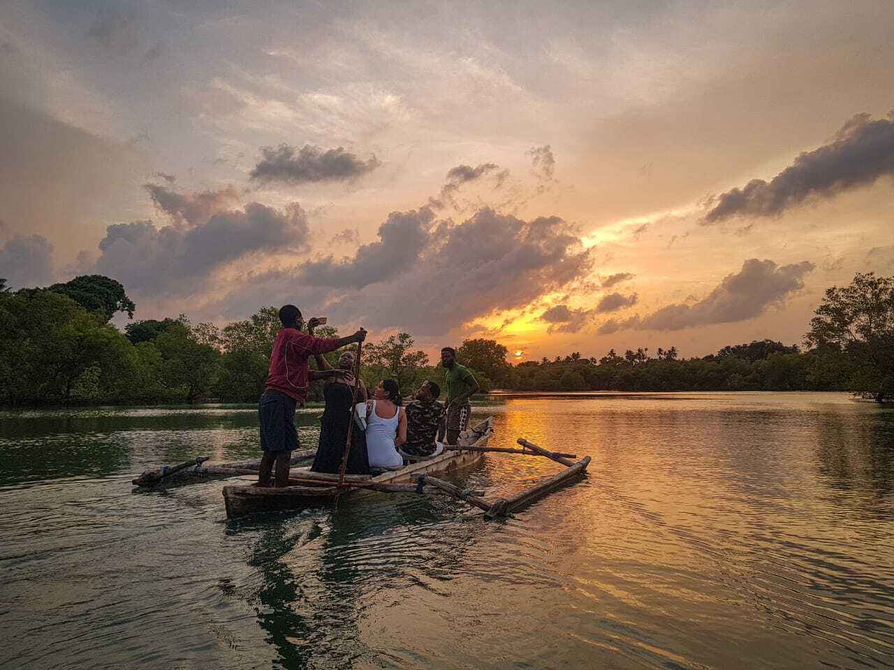
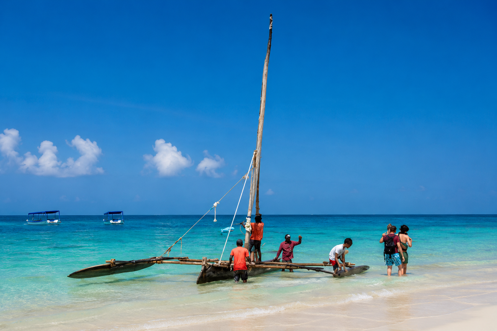
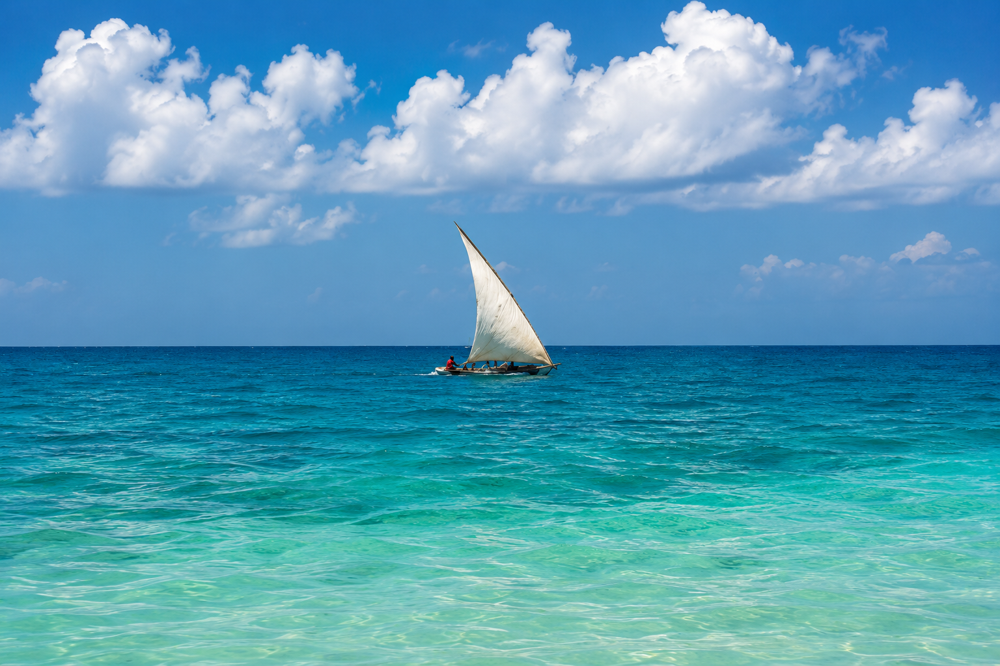

Private islands and river-to-ocean crossings, sailed the traditional way — aboard hand-built jahazis and ngalawas that have worked this coast for generations.
Third Tide · Adventure
Once you've settled in and found your style, the coast asks to be explored by water. All four excursions below move at the pace of the coast itself — aboard traditional jahazis and hand-carved ngalawas, the same vessels that have carried this coast's fishermen and traders for generations.

A slow cruise where the Kongo River gives way to open sea, timed to hit the water just as the sun drops — glassy mangrove channels by day, molten gold by evening. From river to ocean, in a single unhurried run.

Wake before sunrise to swim alongside pods of dolphins in the channel, then drift into Wasini's slow island rhythm — coral gardens, a Swahili seafood lunch, and an afternoon that runs on island time.

Discover the coastal ocean creek and its mangrove forest by traditional boat, drifting through channels where the tide decides how much of the island you get to see that day.

A sandbank that appears and disappears with the tide, reached the traditional way — aboard a jahazi or a hand-carved ngalawa — for an island that asks for nothing but quiet.
Ready When You Are
The Five-Day Coast Adventure
One carefully curated journey. Local stays, hidden experiences and meaningful connections — no planning required.
Plan Your Escape